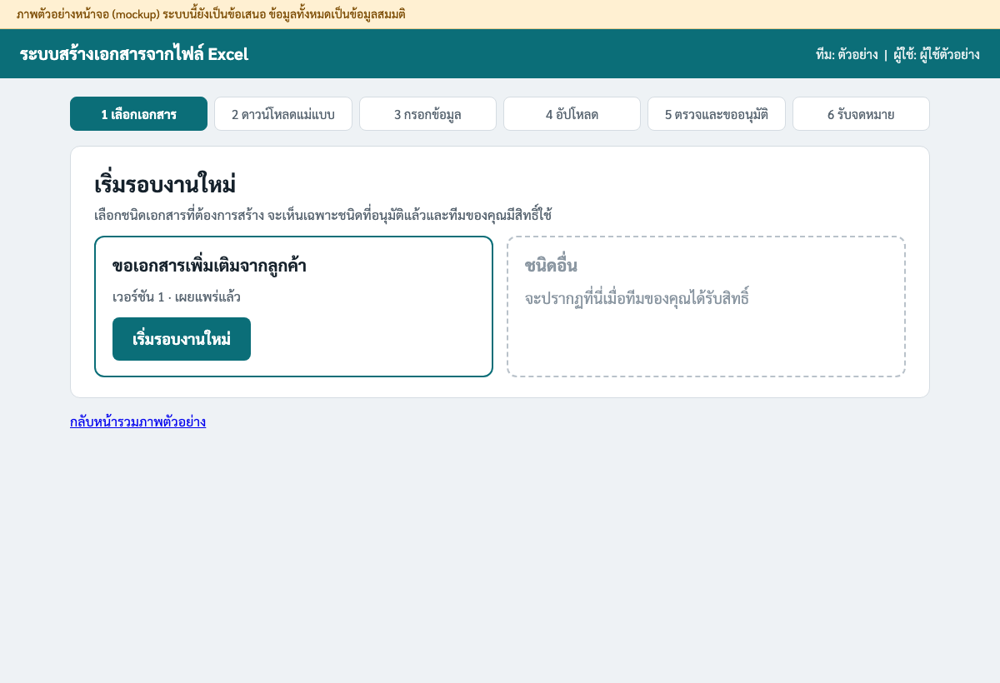
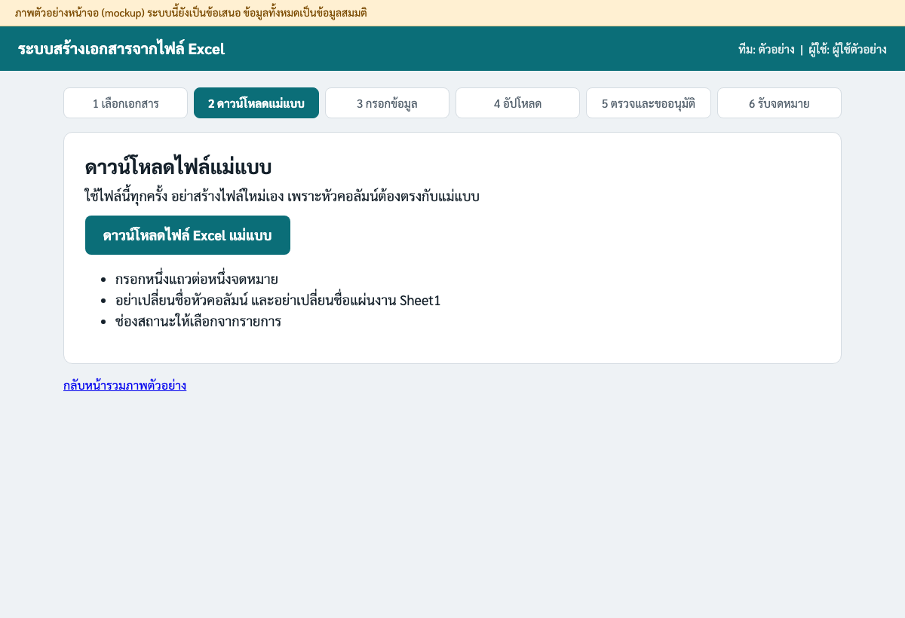
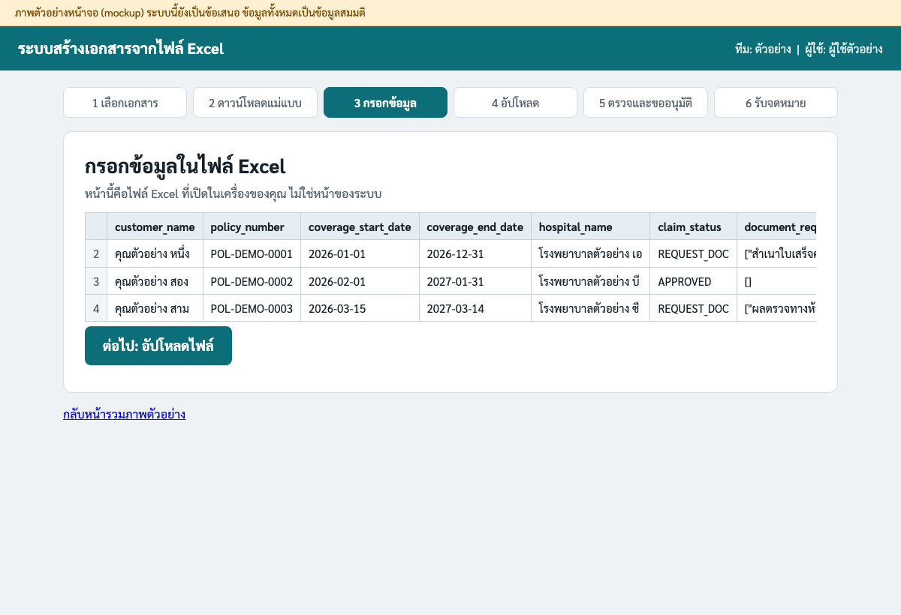
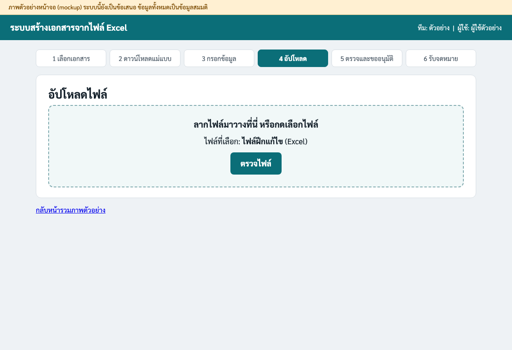
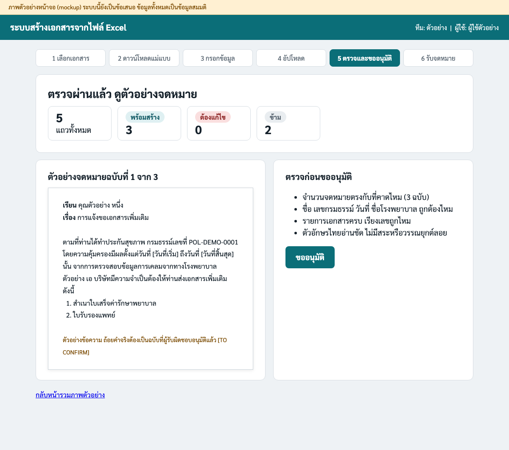
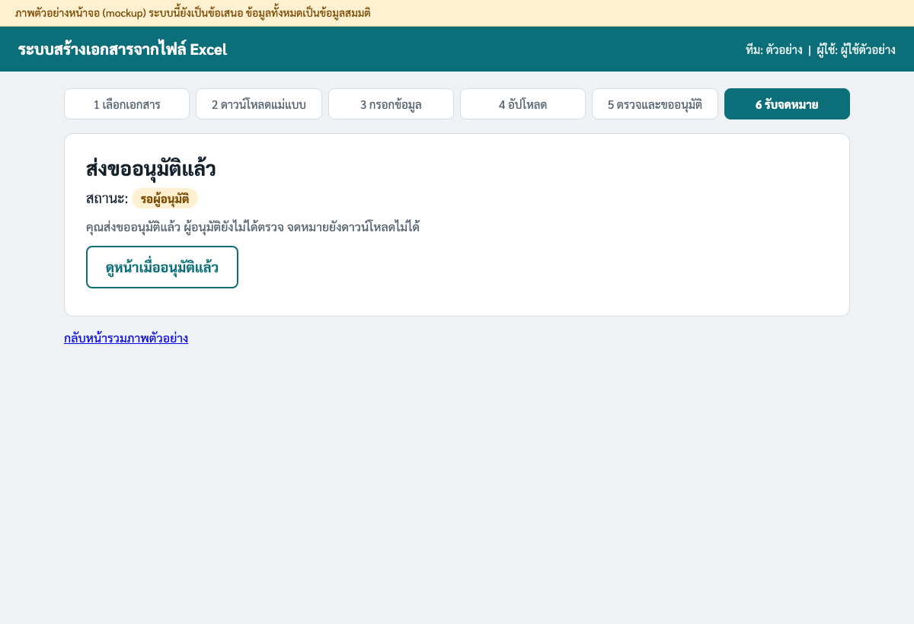
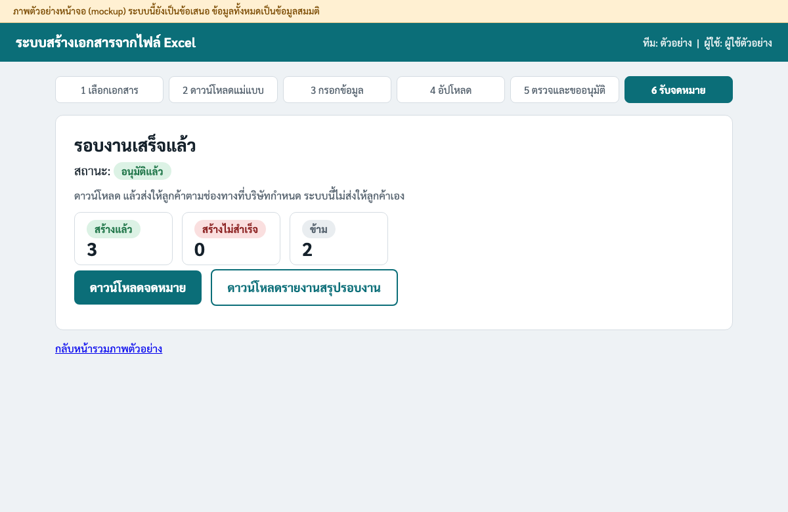
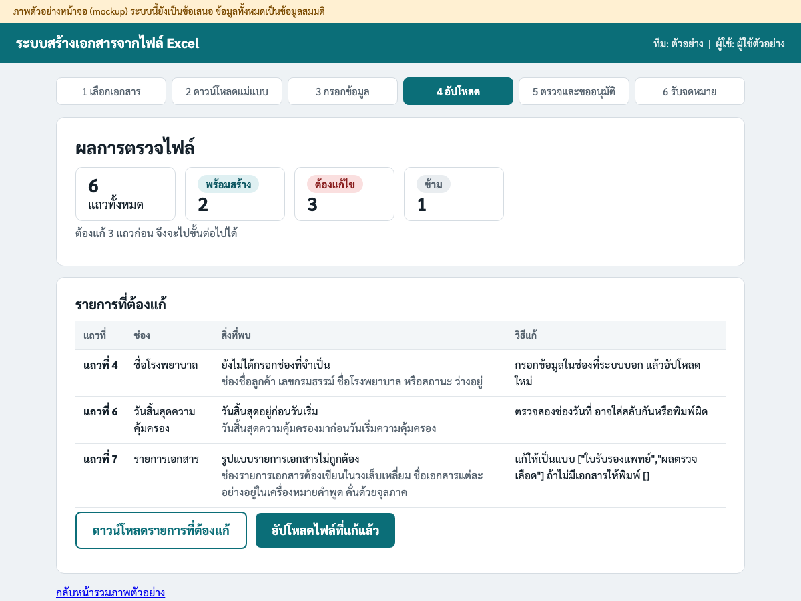

ภาพหน้าจอในคู่มือนี้เป็นภาพตัวอย่าง (mockup) ระบบนี้ยังเป็นข้อเสนอ ยังไม่ได้สร้างจริง ข้อมูลลูกค้าในภาพทั้งหมดเป็นข้อมูลสมมติ ข้อความ [TO CONFIRM] คือสิ่งที่บริษัทต้องตัดสินใจก่อนเปิดใช้งานจริง
คู่มือนี้เขียนสำหรับคนที่ใช้ Microsoft Office, Google Workspace และอีเมลเป็นประจำ ไม่ต้องมีความรู้ด้านโปรแกรมมิ่ง
คุณกรอกรายชื่อลูกค้าในไฟล์ Excel หนึ่งไฟล์ ระบบจะตรวจข้อมูลให้ แล้วสร้างจดหมาย PDF ทีละฉบับ จดหมายจะส่งให้ลูกค้าได้หลังผู้อนุมัติตรวจแล้วเท่านั้น และระบบนี้ไม่ส่งจดหมายให้ลูกค้าเอง
ถ้าเคยใช้ Mail Merge ใน Word: ระบบนี้คล้ายกันตรงที่มีจดหมายต้นแบบหนึ่งฉบับ กับตารางข้อมูลหนึ่งตาราง แล้วได้จดหมายหลายฉบับ ที่ต่างกันคือ ระบบตรวจข้อมูลให้ก่อนสร้าง บอกว่าแถวไหนผิดและต้องแก้อย่างไร มีผู้อนุมัติก่อนปล่อย และจดไว้ว่าใครทำอะไรเมื่อไร
เลือกชนิดเอกสารที่ต้องการ แล้วกดปุ่ม เริ่มรอบงานใหม่

กดปุ่ม ดาวน์โหลดไฟล์ Excel แม่แบบ ใช้ไฟล์นี้ทุกครั้ง อย่าสร้างไฟล์ใหม่เอง

เปิดไฟล์ด้วย Excel แล้วกรอกหนึ่งแถวต่อหนึ่งจดหมาย เริ่มจากแถวที่ 2 ตรงใต้หัวคอลัมน์ ดูวิธีกรอกแต่ละช่องในหัวข้อ "รู้ก่อนกรอก" ด้านล่าง

ลากไฟล์มาวาง หรือกดเลือกไฟล์ แล้วกด ตรวจไฟล์ ระบบจะบอกผลทันที ถ้ามี รายการที่ต้องแก้ ให้ไปดูหัวข้อ "ถ้าระบบบอกว่ามีรายการที่ต้องแก้" ด้านล่าง

ตรวจตัวอย่างตามรายการด้านขวาของหน้าจอ ถ้าถูกต้องให้กดปุ่ม ขออนุมัติ

หลังจากนี้ผู้อนุมัติจะตรวจ ระหว่างรอ สถานะจะเป็น รอผู้อนุมัติ เมื่อเป็น อนุมัติแล้ว ให้ดาวน์โหลดจดหมายและรายงานสรุปรอบงาน


ระบบจะแสดงตารางบอก แถวที่ ใน Excel ช่องที่มีปัญหา สิ่งที่พบ และวิธีแก้ แก้ในไฟล์ Excel แล้วอัปโหลดใหม่ อย่าแก้ไฟล์จดหมายที่สร้างแล้วด้วยมือ

เลขแถวที่ระบบบอก คือเลขแถวที่เห็นทางซ้ายมือของ Excel โดยแถวหัวคอลัมน์เป็นแถวที่ 1
ที่เก็บไฟล์ตัวอย่าง [TO CONFIRM: ที่เก็บไฟล์ตัวอย่างของบริษัท] ข้อมูลในไฟล์เป็นข้อมูลสมมติทั้งหมด
| ชื่อไฟล์ | ใช้ทำอะไร | ผลที่ควรได้เมื่ออัปโหลด |
|---|---|---|
| แม่แบบขอเอกสารเพิ่มเติม | ไฟล์เปล่า มีหัวคอลัมน์ครบ และมีแผ่นงาน คำอธิบาย | ใช้กรอกข้อมูลจริง |
| ตัวอย่างขอเอกสารเพิ่มเติม | ตัวอย่างที่กรอกถูกต้อง 5 แถว | พร้อมสร้าง 3 แถว ข้าม 2 แถว ไม่มีรายการที่ต้องแก้ |
| ไฟล์ฝึกแก้ไข | ฝึกแก้ไขข้อมูล มีข้อผิดพลาดตั้งใจ 3 จุด | ต้องแก้ไข 3 แถว คือ แถวที่ 4, 6 และ 7 |
ลองอัปโหลด ไฟล์ฝึกแก้ไข ก่อน เพื่อดูว่าระบบบอกอะไร แล้วลองแก้ตามคำแนะนำ
อย่าเปลี่ยนชื่อหัวคอลัมน์ในแถวแรก และอย่าเปลี่ยนชื่อแผ่นงานแรกที่ชื่อ Sheet1 ระบบอ่านเฉพาะแผ่นงานนี้
| หัวคอลัมน์ | ใส่อะไร | ตัวอย่าง |
|---|---|---|
| customer_name | ชื่อลูกค้า | คุณตัวอย่าง หนึ่ง |
| policy_number | เลขกรมธรรม์ | POL-DEMO-0001 |
| coverage_start_date | วันเริ่มความคุ้มครอง ต้องเป็นวันที่ใน Excel | 2026-01-01 |
| coverage_end_date | วันสิ้นสุดความคุ้มครอง ต้องไม่ก่อนวันเริ่ม | 2026-12-31 |
| hospital_name | ชื่อโรงพยาบาล | โรงพยาบาลตัวอย่าง เอ |
| claim_status | เลือกจากรายการ REQUEST_DOC คือต้องขอเอกสารเพิ่ม APPROVED คืออนุมัติแล้ว REJECTED คือไม่อนุมัติ | REQUEST_DOC |
| document_request | รายการเอกสารที่ขอ เขียนในวงเล็บเหลี่ยม ชื่อแต่ละอย่างอยู่ในเครื่องหมายคำพูด คั่นด้วยจุลภาค ถ้าไม่ขอให้พิมพ์ [] | ["ใบรับรองแพทย์","ผลตรวจเลือด"] |
จะได้จดหมายเฉพาะแถวที่สถานะเป็น REQUEST_DOC เท่านั้น แถวที่เป็น APPROVED หรือ REJECTED จะขึ้นว่า ข้าม ซึ่งปกติ ไม่ใช่ข้อผิดพลาด
ถ้ามีข้อใดไม่แน่ใจ ห้ามส่ง ให้ปรึกษาผู้อนุมัติหรือหัวหน้าทีมก่อน
| ป้ายที่เห็น | หมายความว่า | ต้องทำอะไร |
|---|---|---|
| พร้อมสร้าง | แถวนี้ผ่านการตรวจ และจะถูกสร้างเป็นจดหมาย | ไม่ต้องทำอะไร |
| ต้องแก้ไข | แถวนี้มีปัญหา จึงยังสร้างจดหมายไม่ได้ | ดูในรายการที่ต้องแก้ แล้วแก้ในไฟล์ Excel และอัปโหลดใหม่ |
| ข้าม | แถวนี้ไม่ต้องส่งจดหมายขอเอกสาร ไม่ใช่ข้อผิดพลาด | ไม่ต้องทำอะไร ถ้าควรได้จดหมายให้ตรวจช่องสถานะ |
| ซ้ำในไฟล์ | แถวนี้เหมือนแถวก่อนหน้าในไฟล์เดียวกัน ระบบสร้างจดหมายเพียงฉบับเดียวจากแถวแรก | ตรวจว่าซ้ำจริง ไม่ต้องสร้างเพิ่ม |
| สร้างแล้ว | สร้างจดหมายของแถวนี้สำเร็จ | ตรวจตัวอย่างก่อนขออนุมัติ |
| สร้างไม่สำเร็จ | ระบบสร้างจดหมายของแถวนี้ไม่ได้ ห้ามส่งแถวนี้ | ดูข้อความ สร้างไม่สำเร็จ ในตารางด้านล่าง |
| ซ้ำ รอเลือก | แถวนี้ซ้ำกับรอบงานก่อนหน้า (การเทียบข้ามรอบเป็นข้อเสนอ ยังไม่มีใน A2) | เลือกวิธีจัดการตามที่ระบบถาม |
| หยุดทั้งรอบ | ระบบอ่านหรือตรวจไฟล์ไม่ได้ จึงหยุดทั้งรอบ | ดูข้อความด้านล่าง แก้ไฟล์ แล้วอัปโหลดใหม่ |
| รอผู้อนุมัติ | ส่งขออนุมัติแล้ว รอผู้อนุมัติตรวจ | รอผลการอนุมัติ |
| อนุมัติแล้ว | ผู้อนุมัติอนุมัติรอบงานนี้แล้ว | ดาวน์โหลดจดหมายได้ |
| ไม่อนุมัติ | ผู้อนุมัติส่งกลับพร้อมเหตุผล | อ่านเหตุผล แก้ไฟล์ แล้วเริ่มรอบงานใหม่ |
| เกิดเมื่อ | ข้อความที่เห็น | หมายความว่า | ต้องทำอะไร |
|---|---|---|---|
| ไฟล์ | เปิดไฟล์ไม่ได้ | ไฟล์อาจเสีย หรือไม่ใช่ไฟล์ Excel ที่ถูกต้อง | เปิดไฟล์ด้วย Excel หรือ Google Sheets ดูว่าเปิดได้ไหม ถ้าไม่ได้ให้ดาวน์โหลดไฟล์แม่แบบใหม่แล้วคัดลอกข้อมูลไปใส่ |
| ไฟล์ | ไม่พบแผ่นงานชื่อ Sheet1 | ระบบอ่านข้อมูลจากแผ่นงานที่ชื่อ Sheet1 เท่านั้น แผ่นงานอื่นในไฟล์จะไม่ถูกอ่าน | ตรวจชื่อแผ่นงานแรกให้เป็น Sheet1 ตามแม่แบบ อย่าเปลี่ยนชื่อ |
| ไฟล์ | ไฟล์ไม่มีข้อมูล | ไม่พบแม้แต่แถวหัวคอลัมน์ | ใช้ไฟล์แม่แบบที่ดาวน์โหลดจากระบบ แล้วกรอกข้อมูลลงไป |
| ไฟล์ | หัวคอลัมน์ไม่ตรงกับแม่แบบ | ชื่อหัวคอลัมน์ในแถวแรกขาด เกิน สลับลำดับ หรือสะกดต่างจากแม่แบบ | เปรียบเทียบแถวแรกกับไฟล์แม่แบบ แล้วแก้ให้เหมือนทุกตัวอักษร |
| แถว | ยังไม่ได้กรอกช่องที่จำเป็น | ช่องชื่อลูกค้า เลขกรมธรรม์ ชื่อโรงพยาบาล หรือสถานะ ว่างอยู่ | กรอกข้อมูลในช่องที่ระบบบอก แล้วอัปโหลดใหม่ |
| แถว | วันที่ไม่ถูกต้อง | ช่องวันที่ไม่ได้เป็นวันที่ใน Excel เช่น พิมพ์เป็นข้อความ | คลิกช่อง เลือกรูปแบบเป็นวันที่ แล้วพิมพ์ใหม่ เช่น 2026-01-31 |
| แถว | วันสิ้นสุดอยู่ก่อนวันเริ่ม | วันสิ้นสุดความคุ้มครองมาก่อนวันเริ่มความคุ้มครอง | ตรวจสองช่องวันที่ อาจใส่สลับกันหรือพิมพ์ผิด |
| แถว | ไม่รู้จักค่าในช่องสถานะ | ช่องสถานะต้องเป็น REQUEST_DOC, APPROVED หรือ REJECTED เท่านั้น | เลือกค่าจากรายการในช่อง ถ้าต้องการสถานะใหม่ให้แจ้งเจ้าของงาน อย่าพิมพ์เอง |
| แถว | รูปแบบรายการเอกสารไม่ถูกต้อง | ช่องรายการเอกสารต้องเขียนในวงเล็บเหลี่ยม ชื่อเอกสารแต่ละอย่างอยู่ในเครื่องหมายคำพูด คั่นด้วยจุลภาค | แก้ให้เป็นแบบ ["ใบรับรองแพทย์","ผลตรวจเลือด"] ถ้าไม่มีเอกสารให้พิมพ์ [] |
| แถว | ขอเอกสารแต่ไม่มีรายการเอกสาร | สถานะเป็น REQUEST_DOC แต่ช่องรายการเอกสารเป็น [] | ใส่ชื่อเอกสารอย่างน้อยหนึ่งอย่าง หรือเปลี่ยนสถานะถ้าไม่ต้องขอเอกสาร |
| แถว | ชื่อเอกสารไม่อยู่ในรายการที่อนุมัติ | ชื่อเอกสารที่ขอไม่อยู่ในรายการชื่อที่อนุมัติ ระบบไม่พิมพ์ชื่อที่ไม่รู้จักลงในจดหมาย | แจ้งเจ้าของแบบฟอร์มให้เพิ่มชื่อภาษาไทย อย่าแก้ชื่อเองให้ต่างจากรายการ |
| แถว | ข้อมูลขัดแย้ง ตรวจสอบ | สถานะไม่ใช่ขอเอกสาร แต่ยังมีรายการเอกสารอยู่ ระบบข้ามแถวนี้และไม่สร้างจดหมาย | ถามเจ้าของงานว่าสถานะหรือรายการเอกสารถูกต้องหรือไม่ ถ้าต้องส่งจดหมายให้แก้ไฟล์แล้วอัปโหลดใหม่ |
| ซ้ำ | แถวซ้ำในไฟล์เดียวกัน | เลขกรมธรรม์และรายการเอกสารเหมือนกับแถวก่อนหน้า ระบบสร้างจดหมายเพียงฉบับเดียวจากแถวแรก | ตรวจว่าซ้ำจริงหรือไม่ ถ้าไม่ซ้ำให้แก้ข้อมูลให้ต่างกันแล้วอัปโหลดใหม่ |
| แถว | รูปแบบชื่อไม่ตรงที่ระบบรู้จัก | ชื่อมีตัวเลขหรืออักขระพิเศษ ระบบคงชื่อตามเดิม ไม่เติมคำนำหน้า (เป็นคำเตือน จดหมายยังถูกสร้าง) | ดูชื่อในตัวอย่างจดหมายว่าถูกต้องหรือไม่ |
| แถว | ข้าม | สถานะของแถวนี้คือ APPROVED หรือ REJECTED จึงไม่ต้องส่งจดหมายขอเอกสาร ไม่ใช่ข้อผิดพลาด | ไม่ต้องทำอะไร ถ้าแถวนี้ควรได้จดหมาย ให้ตรวจช่องสถานะ |
| สร้างจดหมาย | สร้างไม่สำเร็จ: ไฟล์จดหมายว่างเปล่า | ระบบสร้างไฟล์ได้แต่ไม่มีหน้าใดเลย | ลองสร้างแถวนั้นใหม่ ถ้ายังเป็นอีกให้แจ้งผู้ดูแลระบบพร้อมเลขแถว |
| สร้างจดหมาย | สร้างไม่สำเร็จ: พบข้อความที่ไม่ควรมีในจดหมาย | ระบบพบข้อความซ้ำซ้อนหรือข้อความที่ไม่ควรอยู่ในจดหมาย เช่น คำว่า คุณ หรือ โรงพยาบาล ซ้ำ ระบบลบไฟล์ของแถวนี้ให้ | ห้ามส่งแถวนี้ แจ้งทีมดูแลระบบพร้อมรหัสรอบงานและแถวที่ |
| สร้างจดหมาย | สร้างไม่สำเร็จ: จำนวนข้อเอกสารในจดหมายไม่ตรง | เลขข้อในจดหมายไม่ตรงกับจำนวนเอกสารที่ขอ | ห้ามส่งแถวนี้ แจ้งทีมดูแลระบบพร้อมรหัสรอบงานและแถวที่ |
| สร้างจดหมาย | สร้างไม่สำเร็จ: รูปแบบวันที่ในจดหมายไม่ถูกต้อง | ระบบพบวันที่แบบตัวเลข ซึ่งไม่ใช่รูปแบบที่กำหนด | ห้ามส่งแถวนี้ แจ้งทีมดูแลระบบ |
| สร้างจดหมาย | สร้างไม่สำเร็จ: ฟอนต์ภาษาไทยไม่ถูกฝังในไฟล์ | ไฟล์จดหมายอาจแสดงตัวอักษรไทยผิดเมื่อเปิดบนเครื่องอื่น | ห้ามส่งแถวนี้ แจ้งทีมดูแลระบบ |
| สร้างจดหมาย | สร้างไม่สำเร็จ: พบแถบตัวอย่างในจดหมายฉบับจริง | จดหมายฉบับจริงต้องไม่มีแถบ "ตัวอย่าง" ที่ใช้เฉพาะตอนตรวจทาน | ห้ามส่งแถวนี้ แจ้งทีมดูแลระบบ |
| สร้างจดหมาย | สร้างไม่สำเร็จ: ข้อมูลบางอย่างไม่ปรากฏในจดหมาย | ข้อมูลที่ควรอยู่ในจดหมาย เช่น ชื่อหรือเลขกรมธรรม์ หาไม่เจอในไฟล์ที่สร้าง | ห้ามส่งจดหมายฉบับนี้ ตรวจข้อมูลแถวนั้น ถ้าข้อมูลถูกแล้วให้แจ้งผู้ดูแลระบบ |
| สร้างจดหมาย | สร้างจดหมายไม่ได้: เครื่องนี้ยังไม่พร้อมสร้างไฟล์ PDF | ไม่พบโปรแกรมที่ใช้สร้างไฟล์ PDF บนเครื่องที่ระบบทำงานอยู่ | แจ้งทีมดูแลระบบ ไม่ต้องแก้ไฟล์ Excel |
| สร้างจดหมาย | สร้างไม่สำเร็จ: เกิดข้อผิดพลาดอื่น | ระบบสร้างจดหมายแถวนี้ไม่ได้ด้วยเหตุที่ไม่ได้อยู่ในรายการข้างบน | แจ้งผู้ดูแลระบบพร้อมเลขแถวและเลขรอบงาน อย่าส่งจดหมายฉบับนี้ |
| ซ้ำ | ซ้ำกับรอบงานก่อนหน้า | แถวนี้เหมือนกับแถวในรอบงานที่ทำไปแล้ว อาจทำให้ลูกค้าได้รับจดหมายซ้ำ | ดูรอบงานก่อนหน้า แล้วเลือก ใช้ของเดิม หรือ สร้างใหม่ พร้อมเขียนเหตุผล |
| รอบงาน | รอผู้อนุมัติ | คุณส่งขออนุมัติแล้ว ผู้อนุมัติยังไม่ได้ตรวจ จดหมายยังดาวน์โหลดไม่ได้ | รอ หรือแจ้งผู้อนุมัติโดยตรงถ้าใกล้เวลาตัดรอบ |
| รอบงาน | อนุมัติแล้ว | ผู้อนุมัติตรวจแล้ว ดาวน์โหลดจดหมายและรายงานสรุปได้ | ดาวน์โหลด แล้วส่งให้ลูกค้าตามช่องทางที่บริษัทกำหนด ระบบนี้ไม่ส่งให้ลูกค้าเอง |
| รอบงาน | ไม่อนุมัติ | ผู้อนุมัติส่งกลับพร้อมเหตุผล | อ่านเหตุผล แก้ไฟล์ แล้วอัปโหลดใหม่เป็นรอบงานใหม่ ห้ามส่งจดหมายจากรอบนี้ |
| รอบงาน | คุณไม่มีสิทธิ์ทำรายการนี้ | บัญชีของคุณไม่ได้อยู่ในทีมที่ใช้เอกสารชนิดนี้ หรือไม่มีสิทธิ์ขั้นตอนนี้ | แจ้งหัวหน้าทีมเพื่อขอสิทธิ์ |
| สร้างจดหมาย | สร้างไม่สำเร็จ: ใช้เวลานานเกินกำหนด | โปรแกรมสร้างไฟล์ไม่ตอบสนองภายในเวลาที่กำหนด | ลองสร้างรอบใหม่ ถ้ายังเป็นอีกให้แจ้งทีมดูแลระบบ |
ผลรวมที่ควรตรงกัน: จำนวนแถวทั้งหมด = พร้อมสร้าง + ต้องแก้ไข + ข้าม + ซ้ำในไฟล์ และหลังสร้างจดหมาย พร้อมสร้าง = สร้างแล้ว + สร้างไม่สำเร็จ แถวที่ว่างทั้งแถวไม่ถูกนับ
ข้อมูลของฉันอยู่ใน Google Sheets ต้องทำอย่างไร ก่อนดาวน์โหลด ให้ตรวจสามอย่าง คือ หัวคอลัมน์แถวแรกต้องเหมือนแม่แบบทุกตัวอักษร ชื่อแท็บแรกต้องเป็น Sheet1 และช่องวันที่ต้องจัดรูปแบบเป็นวันที่ จากนั้นเลือก ไฟล์ > ดาวน์โหลด > Microsoft Excel แล้วนำไฟล์ที่ได้ไปอัปโหลด
ถ้าอัปโหลดไฟล์ซ้ำสองครั้งจะเป็นอย่างไร ระบบเปิดรอบงานใหม่ทุกครั้ง รอบเก่าไม่ถูกลบ ถ้ามีสองแถวที่เหมือนกันอยู่ในไฟล์เดียวกัน ระบบสร้างจดหมายเพียงฉบับเดียวจากแถวแรกและขึ้นว่า ซ้ำในไฟล์ ให้ตรวจว่าซ้ำจริงหรือไม่ ถ้ามีแถวที่เหมือนกับรอบงานที่ทำไปแล้ว ระบบจะขึ้นว่า ซ้ำกับรอบงานก่อนหน้า และให้คุณเลือกว่าจะ ใช้ของเดิม หรือ สร้างใหม่ พร้อมเขียนเหตุผล ระบบไม่เลือกให้เอง เพื่อไม่ให้ลูกค้าได้รับจดหมายซ้ำโดยไม่ตั้งใจ
ใครเป็นผู้อนุมัติ ผู้อนุมัติคือคนที่หัวหน้าทีมกำหนดให้ตรวจเอกสารชนิดนี้ [TO CONFIRM: ชื่อหรือตำแหน่งผู้อนุมัติของแต่ละทีม] และ [TO CONFIRM: ให้ผู้ขออนุมัติกับผู้อนุมัติเป็นคนเดียวกันได้หรือไม่] สำหรับเอกสารที่มีผลทางกฎหมาย อาจต้องผ่านฝ่ายกฎหมายหรือฝ่ายกำกับดูแลก่อน [TO CONFIRM]
ตัวเลขไม่ตรงกับที่ฉันนับ ต้องทำอย่างไร ตรวจสามอย่าง คือ มีแถวว่างหรือแถวที่ซ่อนอยู่ในไฟล์ไหม มีข้อมูลต่อท้ายใต้แถวสุดท้ายไหม และสถานะของแถวถูกต้องไหม ถ้ายังไม่ตรง ให้แจ้งผู้ดูแลระบบพร้อมเลขรอบงาน
จดหมายที่สร้างแล้วมีคำผิด แก้ในไฟล์จดหมายเองได้ไหม ไม่ได้ ให้แก้ในไฟล์ Excel แล้วอัปโหลดใหม่เป็นรอบงานใหม่ ถ้าถ้อยคำในแบบฟอร์มผิด ให้แจ้งเจ้าของแบบฟอร์ม อย่าส่งจดหมายนั้น
ฉันอัปโหลดไฟล์ผิดไฟล์ไปแล้ว อย่ากดขออนุมัติ แจ้งผู้ดูแลระบบเพื่อยกเลิกรอบงานนั้น แล้วเริ่มรอบงานใหม่ด้วยไฟล์ที่ถูกต้อง [TO CONFIRM: ผู้ใช้ยกเลิกรอบงานเองได้หรือต้องแจ้งผู้ดูแล]
[TO CONFIRM: ช่องทางติดต่อ, ชื่อผู้ดูแลระบบ, วันและเวลาทำการ]
เวลาแจ้งปัญหา ให้บอก เลขรอบงาน แถวที่ และข้อความที่เห็นบนหน้าจอ ห้ามส่งชื่อหรือข้อมูลของลูกค้าทางอีเมลที่บริษัทไม่ได้อนุมัติให้ใช้ส่งข้อมูลลูกค้า